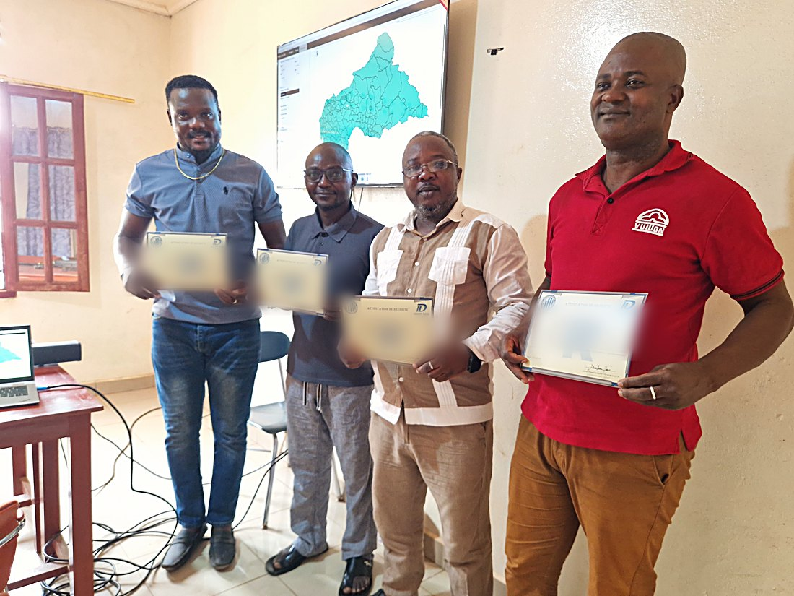
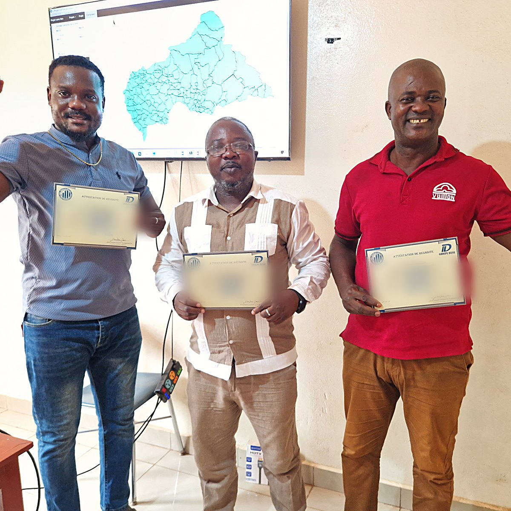

À la fin, vous saurez faire
- Transformer une commande floue en protocole d’étude défendable.
- Concevoir un questionnaire professionnel et le pré-tester.
- Construire un plan d’échantillonnage et calculer vos pondérations.
- Organiser et superviser une collecte PAPI ou CAPI.
- Numériser un questionnaire en XLSForm et le déployer sur tablette.
- Apurer, documenter, archiver et sécuriser vos données.
- Analyser avec Excel, SPSS, Stata et R — et interpréter.
- Cartographier vos résultats et bâtir un tableau de bord.
- Rédiger un rapport conforme aux standards internationaux.
- Défendre vos conclusions devant un jury ou un décideur.
Les logiciels du parcours


Installateurs, jeux de données centrafricains et codes d’analyse réutilisables remis à chaque participant.
Animée par
DN
DASSE TE NGBOKOTA Josué Honoré
Ingénieur statisticien · spécialiste MEAL, analyste quantitatif, développeur de systèmes d’informations décisionnelles
ZK
ZIA KOYANGBO Arsène
Ingénieur statisticien économiste, directeur à l’ICASEES · directeur technique de l’EHCVM 2021, 16 ans d’expérience
DM
DAVY MAKOSSO
Ingénieur statisticien · traitement et analyse des données
La première promotion



Ils l’ont fait avant vous — remise des attestations, Bangui, janvier 2026.